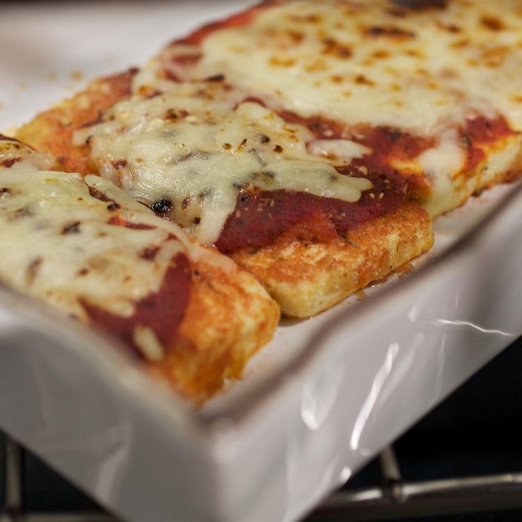

Tofu Parmigiana

Description
Breaded tofu a la parmigiana. You’ll just about swear this is eggplant or veal! Serve with a simple crisp green salad, angel hair pasta and garlic bread.
Ingredients
- 1⁄2 cup seasoned bread crumbs
- 5 tablespoons grated Parmesan cheese
- 2 teaspoons dried oregano, divided
- salt to taste
- ground black pepper to taste
- 1 (12 ounce) package firm tofu
- 2 tablespoons olive oil
- 1 (8 ounce) can tomato sauce
- 1⁄2 teaspoon dried basil
- 1 clove garlic, minced
- 4 ounces shredded mozzarella cheese
Steps
- In a small bowl, combine bread crumbs, 2 tablespoons Parmesan cheese, 1 teaspoon oregano, salt, and black pepper.
- Slice tofu into 1⁄4 inch thick slices, and place in bowl of cold water. One at a time, press tofu slices into crumb mixture, turning to coat all sides.
- Heat oil in a medium skillet over medium heat. Cook tofu slices until crisp on one side. Drizzle with a bit more olive oil, turn, and brown on the other side.
- Combine tomato sauce, basil, garlic, and remaining oregano. Place a thin layer of sauce in an 8 inch square baking pan. Arrange tofu slices in the pan. Spoon remaining sauce over tofu. Top with shredded mozzarella and remaining 3 tablespoons Parmesan.
- Bake at 400 degrees F (205 degrees C) for 20 minutes.